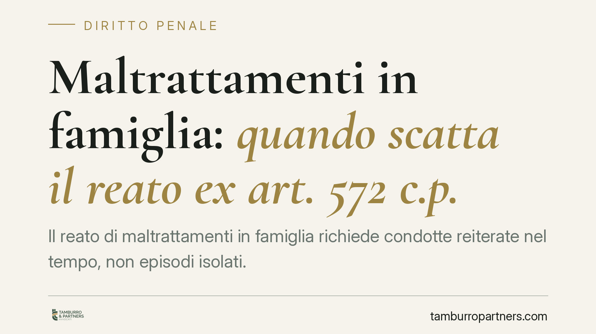

Maltrattamenti in famiglia: quando scatta il reato ex art. 572 c.p.
Il reato di maltrattamenti in famiglia richiede condotte reiterate nel tempo, non episodi isolati. La giurisprudenza estende la tutela anche alla convivenza di fatto e riconosce alle dichiarazioni della persona offesa un peso probatorio rilevante, purché vagliate con rigore. Vediamo cosa serve perché il reato si configuri e cosa cambia per chi accusa e per chi è accusato.

Il fatto: un reato che vive nel tempo
L'art. 572 del Codice penale punisce chi maltratta una persona della famiglia o comunque convivente. Non è un reato che si consuma in un singolo gesto: è un reato abituale, cioè costruito sulla ripetizione delle condotte.
Questo è il primo nodo. Un litigio, per quanto acceso, una percossa isolata o un episodio di ingiuria non integrano il maltrattamento. Serve una serie di comportamenti — violenze fisiche, minacce, umiliazioni, vessazioni psicologiche — che nel loro insieme creano un clima di sopraffazione e sofferenza duraturo.
Inquadramento normativo
L'art. 572 c.p. sanziona con la reclusione da tre a sette anni chiunque maltratta una persona della propria famiglia o con cui convive. La norma tutela la relazione familiare in senso ampio.
Proprio su questo punto la giurisprudenza di legittimità è consolidata: la tutela penale non dipende dall'etichetta giuridica del rapporto. Rileva la convivenza *more uxorio*, cioè il legame di fatto stabile fondato su vincoli affettivi e di reciproca solidarietà, a prescindere dal matrimonio o dalla formalizzazione dell'unione. Ciò che conta è l'esistenza concreta di una comunità di vita.
Va inoltre ricordato che il quadro sanzionatorio si è irrobustito con il cosiddetto Codice Rosso (L. n. 69/2019), che ha introdotto corsie accelerate per i reati di violenza domestica e di genere e ha inasprito il trattamento di diverse fattispecie. Rileva anche l'aggravante prevista dall'art. 61 n. 11-*quinquies* c.p., applicabile quando i fatti sono commessi in presenza o in danno di minori o di donna in stato di gravidanza.
Il valore delle dichiarazioni della persona offesa
Un secondo tema centrale riguarda la prova. Nei reati commessi tra le mura domestiche mancano spesso testimoni esterni: la parola della vittima assume quindi un peso decisivo.
Secondo un orientamento costante, le dichiarazioni della persona offesa possono da sole fondare l'affermazione di responsabilità, senza necessità di riscontri esterni come invece richiesto per la chiamata in correità. Ciò non significa, però, adesione automatica al racconto.
Qui entrano in gioco i principi dell'art. 192 c.p.p. sulla valutazione della prova. Quando la persona offesa è anche costituita parte civile, e ha quindi un interesse economico al risarcimento, la giurisprudenza impone un controllo di attendibilità più penetrante e rigoroso. Non si tratta di presumere la falsità del racconto: si tratta di verificarne con particolare attenzione la coerenza interna, la costanza nel tempo e l'eventuale sostegno di elementi oggettivi (referti, messaggi, testimonianze de relato).
Implicazioni pratiche
Per chi subisce i maltrattamenti. La singola aggressione, presa isolatamente, difficilmente regge in giudizio come maltrattamento. È la ricostruzione dell'insieme che dà forza all'accusa. Documentare gli episodi nel tempo diventa quindi determinante. La condizione di parte civile non indebolisce la posizione, ma espone il racconto a un vaglio più severo: la coerenza è la migliore alleata.
Per chi è indagato o imputato. La difesa si costruisce spesso proprio sull'abitualità: dimostrare che i fatti contestati sono episodi occasionali, o frutto di conflittualità reciproca, può escludere la fattispecie e riportarla eventualmente entro reati meno gravi. Anche il vaglio critico delle dichiarazioni accusatorie, soprattutto se la controparte è parte civile, è terreno difensivo essenziale.
Cosa fare in concreto
- Documentate gli episodi. Annotate date, luoghi e circostanze; conservate messaggi, chat, e-mail e ogni traccia utile a ricostruire la reiterazione delle condotte.
- Raccogliete i referti medici. Ogni accesso al pronto soccorso e ogni certificazione sanitaria costituisce riscontro oggettivo prezioso.
- Agite con tempestività. Ritardi ingiustificati nella denuncia possono incidere sulla valutazione di attendibilità del racconto.
- Verificate la natura del rapporto. La tutela opera anche nella convivenza di fatto: non è necessario un vincolo formalizzato.
- Ricostruite il quadro complessivo. Sia in accusa sia in difesa, è opportuno rivolgersi a un legale per valutare la posizione prima di rendere dichiarazioni o assumere iniziative processuali.
---
*Contributo informativo a cura di Tamburro & Partners - Avv. Giuseppe Tamburro. Non costituisce parere legale.*
Ogni condominio ha una storia a sé.
Se gestisci un'amministrazione e vuoi un confronto su una specifica questione condominiale, scrivi allo studio. Ti rispondiamo entro un giorno lavorativo.